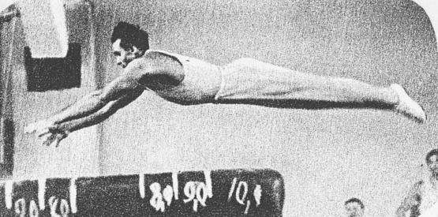

Viktor Chukarin (USSR)
1952 and 1956 Olympic AA Champion
1954 World AA Champion

Medal Total
Olympic Games: 6
Gold, 3 Silver, 1 Bronze
World Championships: 3 Gold, 1 Bronze
Chukarin was born in 1921 in Lvov (Ukrainian SSR) and was affiliated with the "Burevestnik" club. During World War II, he was a German prisoner of war at the Sandbostel concentration camp. He died in 1984.
Competition Results
1947
USSR Championships: 5th AA
1948
Trade Unions Championships: 3rd AA, 1st HB
USSR Championships: 5th AA, 1st PB
1949
HUN-USSR Dual Meet: 1st Team, 2nd AA, 2nd RG, 2nd PB, 2nd HB
USSR Championships: 1st AA, 1st PB
USSR Cup: 2nd PH, 2nd R, 3rd HB
1950
HUN-USSR Dual Meet: 1st Team, 1st AA, 1st PB, 2nd FX, 2nd R, 4th HB, 5th V
Spartakiad of Physical Culture Institutes: 2nd PH, 2nd HB
Trade Unions Championships: 1st AA, 1st PH
USSR Championships: 1st AA, 1st PH, 1st PB
USSR Cup: 2nd R, 2nd HB
1951
USSR Championships: 2nd AA, 1st PB
USSR Cup: 3rd R
1952
Olympic Games: 1st Team, 1st AA, 1st V, 2nd R,
2nd PB, 5th HB
USSR Championships: 2nd AA, 1st PH
USSR Cup: 2nd FX, 2nd R, 2nd V
1953
FRA-USSR Dual Meet: 1st Team, 1st AA
Trade Unions Championships: 8th AA
USSR Championships: 1st AA, 1st PH, 1st PB, 1st HB
USSR Cup: 3rd FX, 3rd R
Youth World Festival: 1st AA
1954
Ukrainian Championships: 1st AA
USSR Championships: 6th AA, 1st PB, 1st HB
USSR Cup: 2nd FX, 3rd PH
World Championships: 1st Team, 1st AA, 1st PB, 3rd
PH, 4th FX, 4th R, 5th HB
1955
Czechoslovak Spartakiad: 2nd AA
Oslo International: 2nd AA
Trade Unions Spartakiad: 1st AA
USSR Championships: 1st AA, 1st PB, 2nd, FX, 3rd PH, 3rd V, 3rd HB
USSR Cup: 4th AA, 2nd FX, 3rd PH, 3rd V, 3rd HB
1956
Olympic Games: 1st Team, 1st AA, 1st PB, 2nd
FX, 3rd PH, 4th HB
USSR Championships: 2nd AA, 1st PB, 2nd R, 3rd FX
USSR Cup: 2nd AA, 1st V, 1st PB, 1st HB, 2nd R, 3rd FX
This page was created on September
06, 2004 and was last updated on May 25, 2026.
© Gymn Forum